The button proof of concept · stage 4
28 ideas for a button, from 142 that were watched working
Every part here was installed, pressed, held or slid by a robot, and drew a real shape on screen. Parts are grouped by how they commit and the trick a person notices first; each idea shows its three best, weighted by GitHub stars and craft.
Press
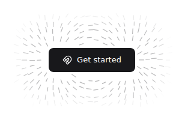
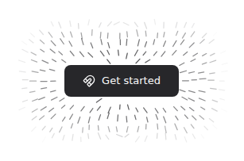
Magnet Button
@kokonutui/attract-button · 2,388 ★
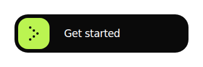
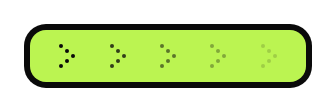
Animated CTA Buttons Expanding Arrow Button
@beui/expanding-arrow-button · 1,990 ★
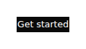
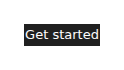
Button
@uiarc/button · 1,331 ★
Press with a moving gradient border
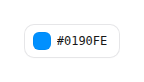
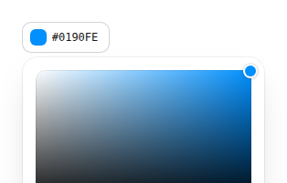
Color Picker
@affectui/color-picker · 904 ★
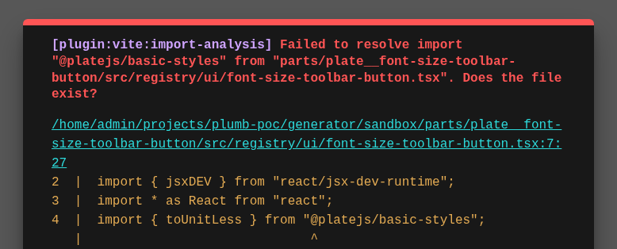
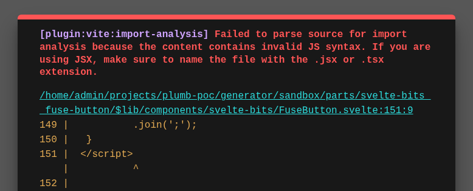
Color Picker (Clean)
@affectui/color-picker-clean · 904 ★
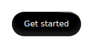
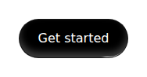
Shimmer Button
@magicui/shimmer-button · 23,380 ★
Press that glows
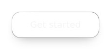
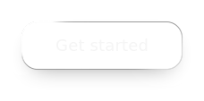
SpecularButton
@react-bits/SpecularButton-TS-TW · 52,349 ★
Gradient Button
@kokonutui/gradient-button · 2,388 ★
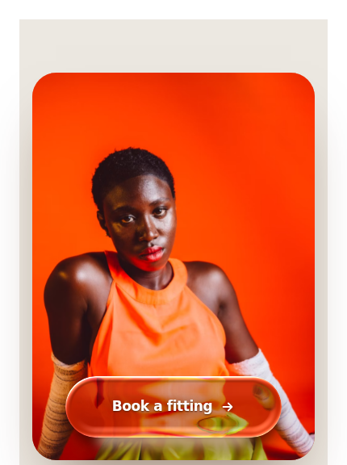
Thick Glass Pill Button That Refracts a Portrait and Flattens When Pressed
@weinc/thick-glass-pill-button-that-refracts-a-portrait-and-flattens-when-pressed · stars unknown
Press with a liquid fill
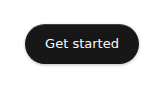
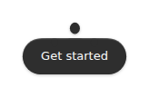
Droplet Button
@devl/droplet-button · 250 ★
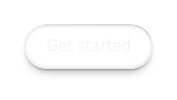
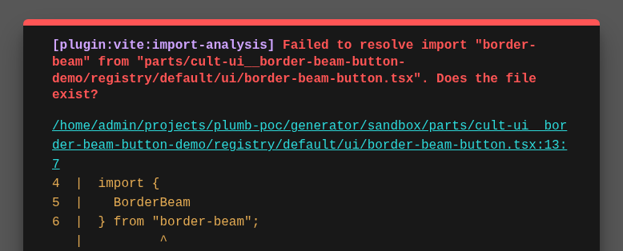
Glass Button
@glassyui/glass-button · 200 ★
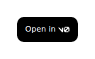
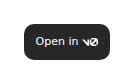
V0 Button
@kokonutui/v0-button · 2,388 ★
Press with a ripple

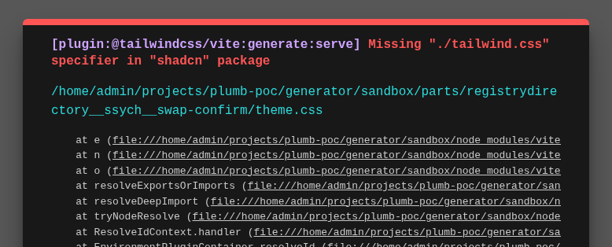
Button Metallic Button
@beui/button-metallic · 1,990 ★
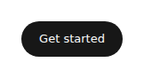
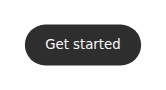
Button Button
@beui/button-base · 1,990 ★

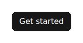
Pulsating Button
@magicui/pulsating-button · 23,380 ★
Press that answers in words whose icon reshapes
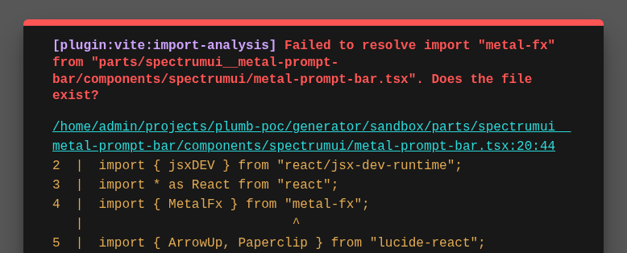
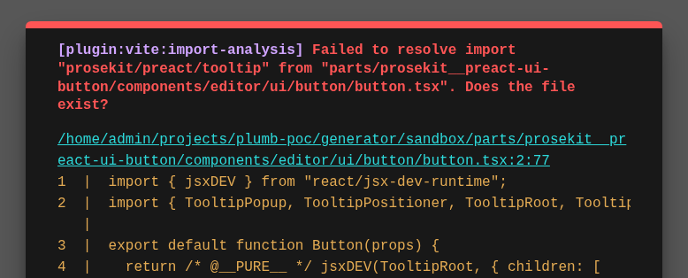
Morph Button
@spectrumui/morph-button · 1,543 ★
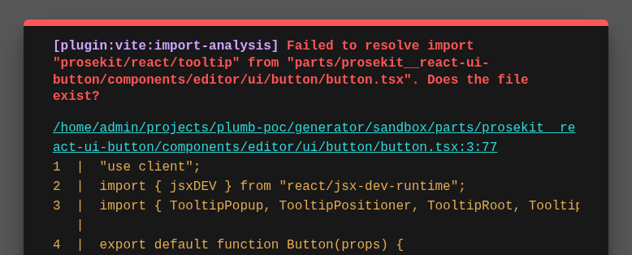

Copy Button
@interior/copy-button · 1,261 ★

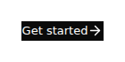
Action button
@uiarc/action-button · 1,331 ★
Press with a shimmer
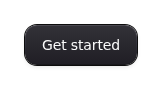
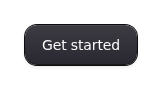
Button
@affectui/button · 904 ★
Button (Clean)
@affectui/button-clean · 904 ★
Shiny Button
@magicui/shiny-button · 23,380 ★
Press that blurs as it changes
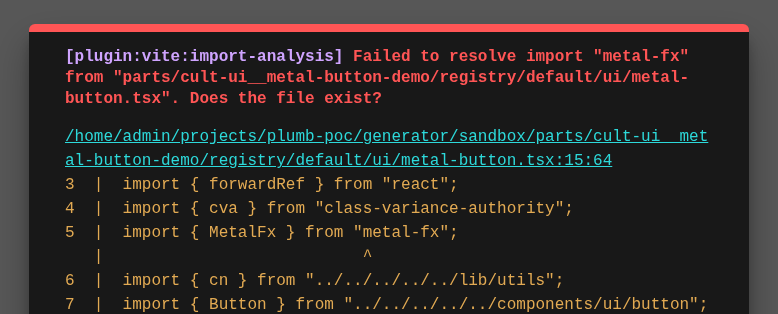
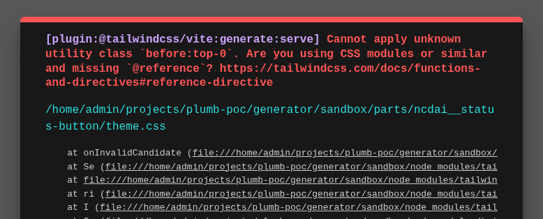
copy-button
@cult-ui/copy-button · 7,574 ★
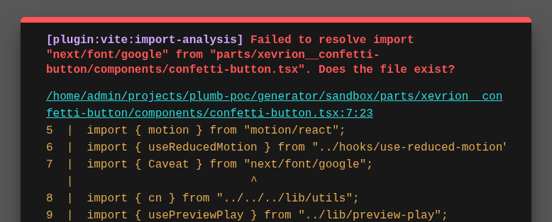

Tooltip group
@xevrion/tooltip-group · stars unknown
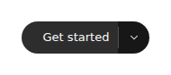
Split button
@hairline/split-button · 21 ★
Press with a burst of particles
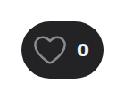
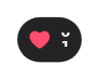
PulseHeart
@react-bits/PulseHeart-TS-TW · 52,349 ★
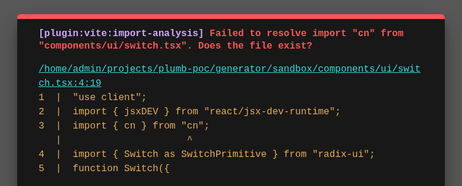

Button 35 - Kids Play
@shadcn-space/button-35 · 822 ★
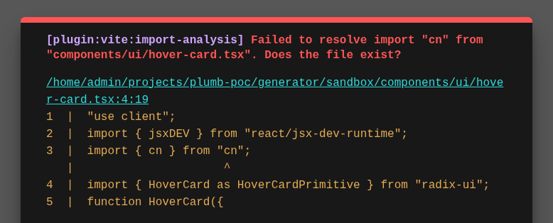

liquid-button
@ui-layouts/liquid-button · 3,864 ★
Press whose icon reshapes
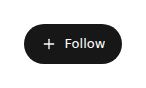
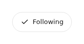
Follow Button
@spectrumui/follow-button · 1,543 ★
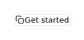
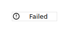
Copy button
@uiarc/copy-button · 1,331 ★
Morphing Button (base)
@watermelon/morphing-button-base · 234 ★
Press that answers in words
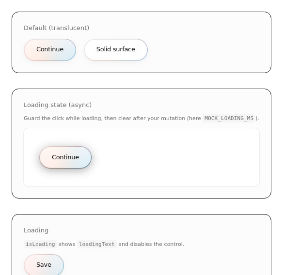
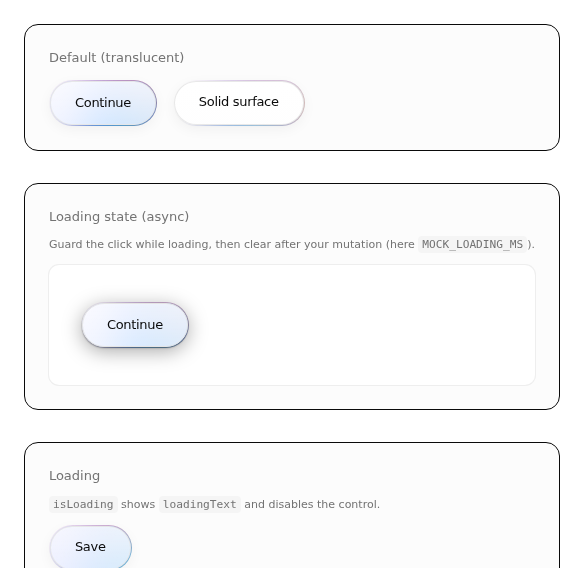
halo-button-demo
@cult-ui/halo-button-demo · 7,574 ★
async-button
@kaui/async-button · 4 ★
Press that follows the pointer that glows
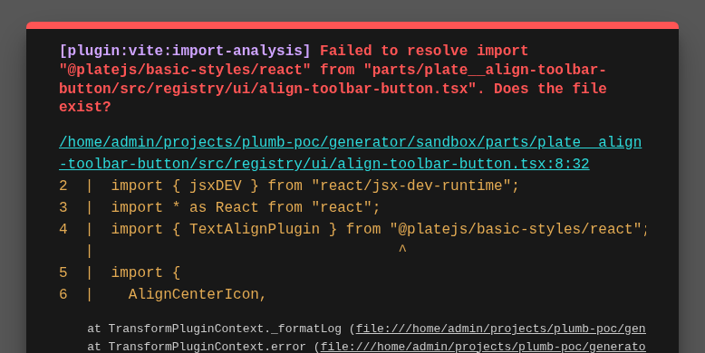
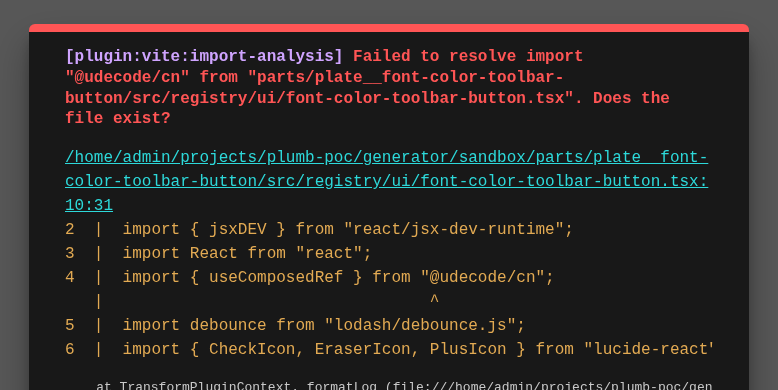
magnetic-dock
@componentry/magnetic-dock · 657 ★
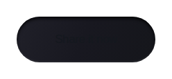
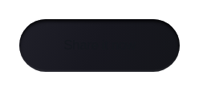
Cursor Follow Share Button
@microkit/cursor-follow-share-button · 107 ★
Press that answers in words that glows

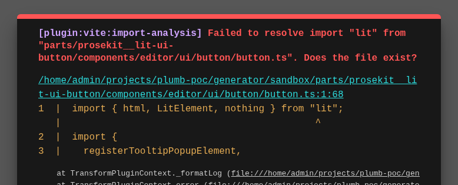
Loading Button
@interior/loading-button · 1,261 ★

Button
@siteplane/button · 12 ★
Press that follows the pointer
btn-animated-gradient
@ui-layouts/btn-animated-gradient · 3,864 ★
Magnetic Button
@velora/magnetic-button · 64 ★
Press, then confirm whose icon reshapes
FuseButton
@react-bits/FuseButton-TS-TW · 52,349 ★
Confirm morph
@uiarc/confirm-morph · 1,331 ★

Two-step Confirm
@stealth/two-step-confirm · stars unknown
Press, then confirm

Tear Button
@kokonutui/tear-button · 2,388 ★
Animated CTA Buttons Slide Action Button
@beui/slide-action-button · 1,990 ★
Press, then confirm that glows
Confirm Slide Shatter
@ns-ui/confirm-slide-shatter · stars unknown
Sinkhole Ravel
@ns-ui/sinkhole-ravel · stars unknown
Press, then confirm with a burst of particles
SlingButton
@react-bits/SlingButton-TS-TW · 52,349 ★
Press, then confirm that blurs as it changes
Confirm Morph
@visant/confirm-morph · stars unknown
Hold
Hold to Confirm
@interior/hold-to-confirm · 1,261 ★

Command Dock
@panelui/command-dock · 1,005 ★
Hold To Delete Button
@sona-ui/hold-to-delete-button · stars unknown
Hold whose icon reshapes
Hold Button
@kokonutui/hold-button · 2,388 ★


Ratchet
@crucible/ratchet · stars unknown

Hold to Confirm
@stealth/hold-to-confirm · stars unknown
Hold with a liquid fill
HoldButton
@react-bits/HoldButton-TS-TW · 52,349 ★
Animated CTA Buttons Hold Action Button
@beui/hold-action-button · 1,990 ★
Confirm Hold Wax
@ns-ui/confirm-hold-wax · stars unknown
Hold with a burst of particles
Hold to start
@hairline/hold-to-start · 21 ★
Hold with grain
Confirm Hold Ink
@ns-ui/confirm-hold-ink · stars unknown
Hold that blurs as it changes

Hold to Confirm
@visant/hold-to-confirm · stars unknown
Slide with a shimmer
Throw
@crucible/throw · stars unknown
Slide to Confirm
@furin/slide-to-confirm · stars unknown
Slide to confirm
@xevrion/slide-to-confirm · stars unknown
Slide

Slide to Confirm
@visant/slide-to-confirm · stars unknown
Slide to Confirm
@prestige/slide-to-confirm · 41 ★
Animated CTA Buttons Slide Action Button
@karaui/slide-action-button · 4 ★
Slide that blurs as it changes
SlideCommit
@react-bits/SlideCommit-TS-TW · 52,349 ★